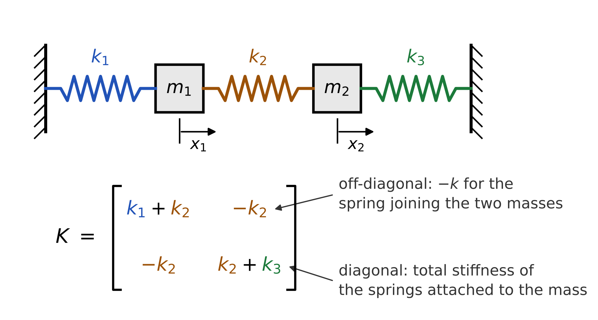
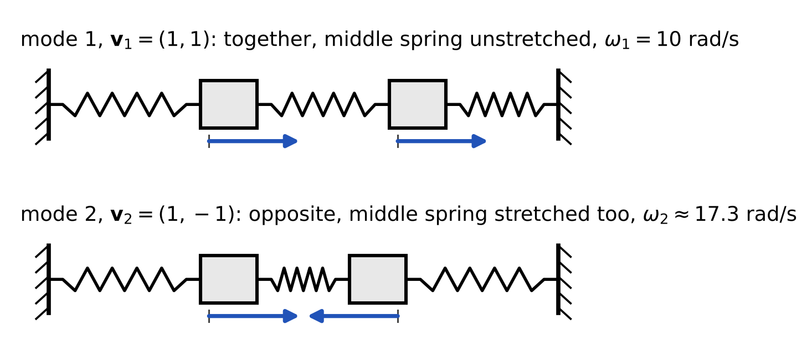
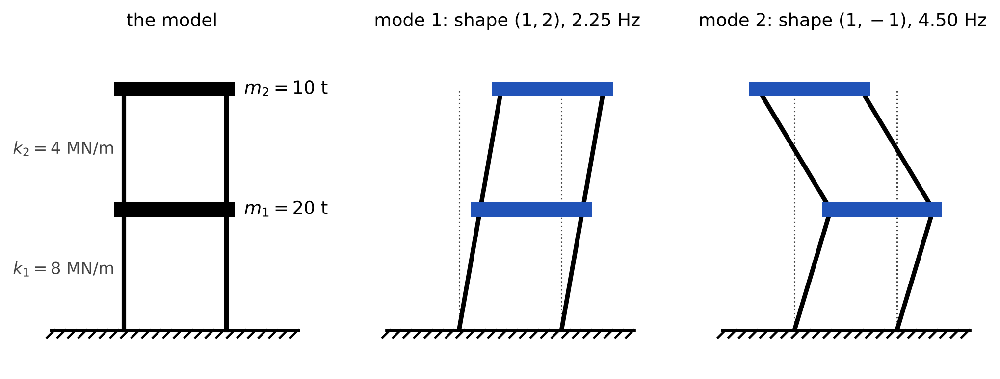

write the equations of motion of a system of masses and springs as \(\M{M}\ddot{\vect{x}} + \M{K}\vect{x} = \zerovec\)
find its natural frequencies and mode shapes from the eigenvalue problem \(\M{K}\vect{v} = \omega^2\M{M}\vect{v}\)
build any free vibration from the normal modes, using their orthogonality
explain resonance, and how a small added mass can stop a large one vibrating
Builds onChapter 18. It also uses three results from Chapter 20 and Chapter 23, given in the box below, so you can read it without those chapters. The stiffness matrix of Chapter 31 helps, but this chapter explains what it needs.
TipWhat you need from Chapters 20 and 23
A symmetric matrix has real eigenvalues and a full set of perpendicular eigenvectors, even when an eigenvalue repeats.
If \(\vect{x}\T\M{S}\vect{x} \ge 0\) for every \(\vect{x}\) (the matrix is positive semidefinite), every eigenvalue of \(\M{S}\) is at least 0.
A linear system of differential equations can be solved one eigenvector at a time: write the starting state as a combination of eigenvectors, and each part then changes on its own. This chapter does the same for equations with second derivatives, and explains it as it goes.
40.1 The problem
Everything with mass and stiffness vibrates: buildings and bridges, car suspensions, aircraft wings, guitar strings, the atoms in a molecule. Each structure has a few natural frequencies at which it prefers to vibrate, and at each one it moves in a particular pattern, its mode shape. Engineers need to know both. If an earthquake, a machine, the wind or footsteps push a structure at one of its natural frequencies, the vibrations build up: this is resonance, and it can break things. Chemists use the same ideas the other way round: a molecule absorbs infrared light at its natural frequencies, which identifies the molecule.
For a structure with \(n\) moving parts, the natural frequencies and mode shapes come from an \(n \times n\) eigenvalue problem. This chapter sets it up for masses joined by springs, the model behind both a tall building and a vibrating molecule.
40.2 The model
Equations of motion
Take \(n\) masses \(m_1, \dots, m_n\) in a line, joined to each other and to fixed walls by springs, and let \(x_i\) be the displacement of mass \(i\) from its resting position. A spring of stiffness \(k\) stretched by \(\delta\) pulls with force \(k\delta\), so the spring between masses \(i\) and \(i + 1\) pulls mass \(i\) with force \(k(x_{i+1} - x_i)\), and mass \(i + 1\) with the opposite force. Newton’s second law for each mass gives one equation, and together they form \[
\M{M}\ddot{\vect{x}} + \M{K}\vect{x} = \zerovec,
\tag{40.1}\] where the dots mean derivatives with respect to time, \(\M{M} = \operatorname{diag}(m_1, \dots, m_n)\) is the mass matrix and \(\M{K}\) is the stiffness matrix. For three springs and two masses between walls (Figure 40.1), \[
\M{K} = \mat{k_1 + k_2 & -k_2 \\ -k_2 & k_2 + k_3}.
\] Each mass’s diagonal entry is the total stiffness of the springs attached to it, and each spring joining two masses puts \(-k\) in their off-diagonal entries. As for a truss (Chapter 31), \(\M{K} = \M{B}\T\M{D}\M{B}\), where \(\M{B}\) turns displacements into spring extensions and \(\M{D}\) holds the stiffnesses, so \(\M{K}\) is symmetric and positive semidefinite.

Figure 40.1: Two masses between walls, joined by three springs, and the stiffness matrix they give. Each term in \(\M{K}\) is coloured like the spring it comes from: spring \(k_2\), which joins the masses, appears in all four entries.
Natural frequencies and mode shapes
Look for motions in which every mass moves in step, at the same frequency: \[
\vect{x}(t) = \vect{v}\cos(\omega t).
\] Then \(\ddot{\vect{x}} = -\omega^2\vect{v}\cos(\omega t)\), and Equation 40.1 becomes \((\M{K} - \omega^2\M{M})\vect{v}\cos(\omega t) = \zerovec\) for all \(t\), so \[
\M{K}\vect{v} = \omega^2\M{M}\vect{v}.
\tag{40.2}\] This is a generalised eigenvalue problem: an ordinary one when \(\M{M} = m\M{I}\), but with \(\M{M}\) in place of \(\M{I}\) in general. It has a nonzero solution \(\vect{v}\) only when \[
\det(\M{K} - \omega^2\M{M}) = 0,
\] a polynomial equation of degree \(n\) in \(\omega^2\). Its roots give the natural frequencies\(\omega_1 \le \omega_2 \le \dots \le \omega_n\), in radians per second (\(f = \omega/2\pi\) in hertz, cycles per second), and the solutions \(\vect{v}_i\) are the mode shapes. A mode shape gives the pattern of the motion, not its size: any multiple of \(\vect{v}_i\) is also a mode shape.
Because \(\M{K}\) and \(\M{M}\) are symmetric, and \(\M{M}\) is positive definite, the modes behave like the eigenvectors of a symmetric matrix. Substitute \(\vect{v} = \M{M}^{-1/2}\vect{w}\), where \(\M{M}^{-1/2} = \operatorname{diag}(1/\sqrt{m_1}, \dots, 1/\sqrt{m_n})\). Then Equation 40.2 becomes \[
\M{M}^{-1/2}\M{K}\M{M}^{-1/2}\,\vect{w} = \omega^2\vect{w},
\] an ordinary eigenvalue problem for a symmetric positive semidefinite matrix (Chapter 20). So:
every \(\omega^2\) is real and at least 0, so every natural frequency is real;
there are \(n\) independent mode shapes, even when frequencies repeat;
the modes are orthogonal with respect to \(\M{M}\): \(\vect{v}_i\T\M{M}\vect{v}_j = 0\) for \(i \neq j\) (exercise 2), and also \(\vect{v}_i\T\M{K}\vect{v}_j = 0\).
A natural frequency of zero means that \(\M{K}\vect{v} = \zerovec\): the structure can move in the pattern \(\vect{v}\) without stretching any spring. That is a rigid-body mode, such as a molecule drifting through space, or a mechanism (Chapter 31).
NoteExample 1: two masses between walls
Two masses of \(m = 1\) kg are joined to each other and to two walls by three springs of stiffness \(k = 100\) N/m. Find the natural frequencies and mode shapes.
Solution. Here \(\M{M} = \M{I}\) and \[
\M{K} = \mat{200 & -100 \\ -100 & 200},
\qquad
\det(\M{K} - \lambda\M{I}) = (200 - \lambda)^2 - 100^2 = (\lambda - 100)(\lambda - 300),
\] writing \(\lambda = \omega^2\). For \(\lambda = 100\), \(\M{K} - 100\M{I} = \mat{100 & -100 \\ -100 & 100}\) gives \(\vect{v}_1 = (1, 1)\T\): the masses move together, in step, and the middle spring is never stretched. For \(\lambda = 300\), \(\M{K} - 300\M{I} = \mat{-100 & -100 \\ -100 & -100}\) gives \(\vect{v}_2 = (1, -1)\T\): the masses move in opposite directions, stretching and squashing the middle spring as well (Figure 40.2). The natural frequencies are \[
\omega_1 = 10 \text{ rad/s}\;(1.59 \text{ Hz}),
\qquad
\omega_2 = \sqrt{300} \approx 17.3 \text{ rad/s}\;(2.76 \text{ Hz}).
\] The mode that stretches more springs, for the same displacements, is the stiffer one, and so the faster one. That is true in general: higher modes have more changes of direction along the structure.

Figure 40.2: The two mode shapes of Example 1. In mode 1 the masses move together and the middle spring keeps its length; in mode 2 they move in opposite directions, so the middle spring is stretched and squashed too, and the mode is faster.
The equations are linear, so any combination of modes is also a motion, and every free vibration is one: \[
\vect{x}(t) = \sum_{i=1}^n \vect{v}_i\bigl(a_i\cos(\omega_i t) + b_i\sin(\omega_i t)\bigr).
\tag{40.3}\] This is the same idea as solving \(\dot{\vect{x}} = \M{A}\vect{x}\) with eigenvectors (Chapter 23); here the equation is second order, so each mode has a cosine and a sine instead of one exponential. The starting displacement \(\vect{x}_0\) and velocity \(\dot{\vect{x}}_0\) fix the coefficients, and \(\M{M}\)-orthogonality gives them directly. Multiplying Equation 40.3 at \(t = 0\) by \(\vect{v}_i\T\M{M}\) kills every term except the \(i\)th: \[
a_i = \frac{\vect{v}_i\T\M{M}\vect{x}_0}{\vect{v}_i\T\M{M}\vect{v}_i},
\qquad
b_i = \frac{\vect{v}_i\T\M{M}\dot{\vect{x}}_0}{\omega_i\,\vect{v}_i\T\M{M}\vect{v}_i}.
\] Each mode then carries on at its own frequency, ignoring the others. The motion as a whole needn’t repeat, because the frequencies needn’t be in simple ratios.
NoteExample 2: pulling one mass and letting go
In Example 1, mass 1 is pulled 2 cm to the right and both masses are released from rest. Describe the motion.
Solution. With \(\M{M} = \M{I}\), the coefficients are \(a_i = \vect{v}_i\T\vect{x}_0/\vect{v}_i\T\vect{v}_i\). For \(\vect{x}_0 = (0.02, 0)\T\), \[
a_1 = \frac{0.02}{2} = 0.01,
\qquad
a_2 = \frac{0.02}{2} = 0.01,
\] and every \(b_i = 0\), since the start is from rest. So \[
\vect{x}(t) = 0.01\cos(10t)\mat{1 \\ 1} + 0.01\cos(17.3t)\mat{1 \\ -1}.
\] Mass 1 moves as \(0.01\bigl(\cos(10t) + \cos(17.3t)\bigr)\) and mass 2 as \(0.01\bigl(\cos(10t) - \cos(17.3t)\bigr)\). Pulling one mass excites both modes equally, and since \(\sqrt{3}\) is irrational the motion never exactly repeats; but it is just two simple vibrations added together.
NoteExample 3: a two-storey building
In a simple model of a two-storey building, each floor is a mass and each storey’s columns are a spring that resists sideways movement. The lower floor has mass \(m_1 = 20\) tonnes and the upper \(m_2 = 10\) tonnes; the lower storey has stiffness \(k_1 = 8\) MN/m and the upper \(k_2 = 4\) MN/m. Find the natural frequencies and mode shapes.
Solution. The ground is fixed and the roof is free, so \[
\M{K} = 10^6\mat{12 & -4 \\ -4 & 4},
\qquad
\M{M} = 10^4\mat{2 & 0 \\ 0 & 1}.
\] Dividing both by \(4 \times 10^6\) and writing \(\mu = \omega^2/400\), \[
\det\mat{3 - 2\mu & -1 \\ -1 & 1 - \mu} = (3 - 2\mu)(1 - \mu) - 1 = 2\mu^2 - 5\mu + 2 = (2\mu - 1)(\mu - 2) = 0.
\] So \(\mu = \tfrac{1}{2}\) or 2, that is \(\omega^2 = 200\) or 800: \[
\omega_1 \approx 14.1 \text{ rad/s}\;(2.25 \text{ Hz}),
\qquad
\omega_2 \approx 28.3 \text{ rad/s}\;(4.50 \text{ Hz}).
\] The first row of \((\M{K} - \omega^2\M{M})\vect{v} = \zerovec\) gives \((3 - 2\mu)v_1 = v_2\). For \(\mu = \tfrac{1}{2}\), \(\vect{v}_1 = (1, 2)\T\): both floors sway the same way, the top one twice as far. For \(\mu = 2\), \(\vect{v}_2 = (1, -1)\T\): the floors sway in opposite directions (Figure 40.3).
These modes are not perpendicular, \((1, 2) \cdot (1, -1) = -1\), but they are \(\M{M}\)-orthogonal: \[
\vect{v}_1\T\M{M}\vect{v}_2 = 10^4(2 \times 1 \times 1 + 1 \times 2 \times (-1)) = 0.
\] Earthquakes often shake the ground strongly at frequencies of a few hertz, close to these, which is why low-rise buildings in earthquake zones need careful design.

Figure 40.3: The two-storey building of Example 3 and its two mode shapes. In mode 1 both floors sway the same way, the top one twice as far; in mode 2 they sway in opposite directions.
Now push the masses with forces that vary like \(\cos(\Omega t)\), at a driving frequency\(\Omega\): \[
\M{M}\ddot{\vect{x}} + \M{K}\vect{x} = \vect{f}\cos(\Omega t).
\] Trying \(\vect{x} = \vect{X}\cos(\Omega t)\) gives a linear system for the amplitudes, \[
(\M{K} - \Omega^2\M{M})\vect{X} = \vect{f}.
\tag{40.4}\] When \(\Omega\) is close to a natural frequency, the matrix \(\M{K} - \Omega^2\M{M}\) is close to singular, so the amplitudes are huge: resonance. Writing \(\vect{X}\) in terms of the modes, using their \(\M{M}\)-orthogonality, shows exactly how: \[
\vect{X} = \sum_{i=1}^n \frac{\vect{v}_i\T\vect{f}}{(\omega_i^2 - \Omega^2)\,\vect{v}_i\T\M{M}\vect{v}_i}\,\vect{v}_i.
\] Mode \(i\) is amplified by \(1/(\omega_i^2 - \Omega^2)\), which blows up as \(\Omega\) approaches \(\omega_i\). But a mode is not excited at all if \(\vect{v}_i\T\vect{f} = 0\): pushing a structure where a mode doesn’t move, or symmetrically when the mode is antisymmetric, can’t drive it. Real structures have some damping, a friction-like force \(\M{C}\dot{\vect{x}}\), which keeps the peaks finite; but lightly damped structures, which most are, still respond far more strongly near their natural frequencies. Designers move the natural frequencies away from the driving frequencies they expect, add damping, or add a tuned mass damper.
NoteExample 4: shaking one mass
In Example 1, a force \(F\cos(\Omega t)\) pushes mass 1. Find the amplitudes of the two masses, and the driving frequencies at which they become very large. At what frequency does mass 1 not move at all?
Solution.Equation 40.4 is \[
\mat{200 - \Omega^2 & -100 \\ -100 & 200 - \Omega^2}\mat{X_1 \\ X_2} = \mat{F \\ 0}.
\] The determinant is \((200 - \Omega^2)^2 - 100^2 = (100 - \Omega^2)(300 - \Omega^2)\), so by the \(2 \times 2\) inverse formula (Chapter 7), \[
X_1 = \frac{(200 - \Omega^2)F}{(100 - \Omega^2)(300 - \Omega^2)},
\qquad
X_2 = \frac{100F}{(100 - \Omega^2)(300 - \Omega^2)}.
\] Both blow up at \(\Omega = 10\) and \(\Omega = \sqrt{300} \approx 17.3\) rad/s: the natural frequencies. But at \(\Omega = \sqrt{200} \approx 14.1\) rad/s, \(X_1 = 0\): mass 1 stands still, even though it is the one being pushed, while mass 2 moves with amplitude \(X_2 = -F/100\). Mass 2 pulls on mass 1, through the middle spring, with a force that exactly cancels the push.
This is the principle of the tuned mass damper. A large mass attached to a vibrating structure by a spring, tuned to the troublesome frequency, absorbs the vibration. The 101-storey Taipei 101 tower has a 660-tonne steel ball hanging near its top for this reason.
The app shows a row of masses and springs. Choose a mode to watch it, start the masses from a pulled position, or shake the first mass and see how the amplitudes depend on the driving frequency.
In Two masses, play mode 1 and then mode 2. Which springs stretch in each? Then choose Pull mass 1 and release it: can you see both modes in the motion?
In Five masses, play the modes in order. How many times does the shape change direction in mode \(k\)? Does the pattern remind you of a vibrating string?
In Building, double the mass of the top floor. Do the frequencies go up or down? Does the shape of mode 1 change?
In Absorber, a 1 kg mass on a spring has a small 0.1 kg mass attached to it. Turn on Shake mass 1 and slowly sweep the driving frequency from about 5 to 15 rad/s. Where does mass 1 stop moving, and how does that frequency compare with \(\sqrt{k_2/m_2}\) for the small mass and its spring? Now make the small mass 0.2 kg: where does that point move?
40.4 In code
scipy.linalg.eigh and MATLAB’s eig both solve the generalised problem \(\M{K}\vect{v} = \lambda\M{M}\vect{v}\) directly, when given both matrices.
import numpy as npfrom scipy.linalg import eigh# Example 3: the two-storey buildingK =1e6* np.array([[12, -4], [-4, 4]])M =1e4* np.diag([2, 1])lam, V = eigh(K, M) # solves K v = lam M v, smallest lam firstomega = np.sqrt(lam)print(omega, omega / (2* np.pi))print(V / V[0]) # scale each mode so that its first entry is 1print(np.round(V.T @ M @ V, 10)) # M-orthogonal: eigh scales them so this is I# Example 4: amplitudes when mass 1 is shakenK1 = np.array([[200, -100], [-100, 200]])for Om in [5, 10.5, np.sqrt(200), 20]: X = np.linalg.solve(K1 - Om**2* np.eye(2), [1, 0])print(round(Om, 2), np.round(X, 4))
% Example 3: the two-storey buildingK=1e6* [12-4;-44];M=1e4*diag([21]);[V,L] =eig(K,M);% solves K v = lambda M vomega=sqrt(diag(L));V=V./V(1,:);% scale each mode so that its first entry is 1fprintf('omega = %.4f rad/s, f = %.4f Hz, mode (1, %.4f)\n', [omega';omega'/(2*pi);V(2,:)])% Example 4: amplitudes when mass 1 is shakenK1= [200-100;-100200];forOm= [510.5sqrt(200) 20]X= (K1-Om^2*eye(2)) \ [1;0];fprintf('%6.2f %9.4f %9.4f\n',Om,X)end
Close to the first resonance, at \(\Omega = 10.5\), the amplitudes are 5 to 10 times larger than at \(\Omega = 5\), and both masses move the same way, roughly in the shape of mode 1. At \(\Omega = \sqrt{200}\), mass 1 doesn’t move, as Example 4 found.
40.5 Check your understanding
TipIf every mass in a structure is doubled, what happens to the natural frequencies?
They are divided by \(\sqrt{2}\). Doubling \(\M{M}\) turns \(\M{K}\vect{v} = \omega^2\M{M}\vect{v}\) into \(\M{K}\vect{v} = \omega^2(2\M{M})\vect{v}\), which has the same mode shapes with \(\omega^2\) halved. Heavier structures vibrate more slowly; stiffer ones more quickly.
TipIn Example 1, can equal forces \(F\cos(\Omega t)\) on both masses make the second mode resonate?
No. The force vector is \(F(1, 1)\), and \(\vect{v}_2\T(1, 1) = 1 - 1 = 0\), so the second mode isn’t excited at all, whatever \(\Omega\) is. Pushing both masses the same way can only drive the mode in which they move together.
TipWhat does a natural frequency of zero mean?
That \(\M{K}\vect{v} = \zerovec\) for the mode shape \(\vect{v}\): the structure can move in that pattern without stretching any spring, so nothing pulls it back. It is a rigid-body motion, such as a whole molecule drifting, or a mechanism.
40.6 Key ideas
Masses joined by springs obey \(\M{M}\ddot{\vect{x}} + \M{K}\vect{x} = \zerovec\), with a diagonal mass matrix and a symmetric stiffness matrix.
The natural frequencies and mode shapes solve the generalised eigenvalue problem \(\M{K}\vect{v} = \omega^2\M{M}\vect{v}\).
The frequencies are real, and the modes are orthogonal with respect to \(\M{M}\), because the problem is a symmetric eigenvalue problem in disguise.
Every free vibration is a sum of modes, each at its own frequency; \(\M{M}\)-orthogonality gives the amount of each from the starting state.
Forcing at a natural frequency makes the amplitudes grow without limit (resonance), unless the force doesn’t excite that mode. A tuned mass damper uses an added mass and spring to cancel the motion at one frequency.
40.7 Exercises
Exercises marked † are harder: they take longer, or need an idea that the worked examples don’t show.
Two masses \(m\) hang one below the other from a fixed support: a spring \(k\) joins the support to mass 1, and another spring \(k\) joins mass 1 to mass 2. Find the natural frequencies, as multiples of \(\sqrt{k/m}\), and the mode shapes.
Suppose \(\M{K}\vect{v} = \lambda\M{M}\vect{v}\) and \(\M{K}\vect{w} = \mu\M{M}\vect{w}\), with \(\M{K}\) and \(\M{M}\) symmetric and \(\lambda \neq \mu\). Show that \(\vect{v}\T\M{M}\vect{w} = 0\) and \(\vect{v}\T\M{K}\vect{w} = 0\). (Hint: compute \(\vect{v}\T\M{K}\vect{w}\) in two ways.)
†Harder exercise. A diatomic molecule is two atoms of masses \(m_1\) and \(m_2\) joined by a bond that acts like a spring of stiffness \(k\), with no walls. Write down \(\M{K}\) and \(\M{M}\), and show that one natural frequency is 0 and the other is \(\omega = \sqrt{k(1/m_1 + 1/m_2)}\). Describe both modes. For carbon monoxide, \(k \approx 1900\) N/m, the atoms have masses 12 and 16 atomic mass units, and \(1 \text{ u} = 1.661 \times 10^{-27}\) kg. Find the vibration frequency in hertz. (Hint: with no walls, \(\M{K} = k\mat{1 & -1 \\ -1 & 1}\). Set \(\det(\M{K} - \omega^2\M{M}) = 0\) and take out the factor \(\omega^2\).)
In Example 1, both masses start at rest in their resting positions, and mass 1 is struck so that it starts with velocity 0.5 m/s. Find \(\vect{x}(t)\).
The lower storey of the building in Example 3 is stiffened to \(k_1 = 16\) MN/m. Find the new natural frequencies and mode shapes. Which way did the frequencies move, and how did the first mode shape change?
†Harder exercise. A machine of mass \(m_1\) sits on a mounting of stiffness \(k_1\), and an unbalanced motor shakes it with force \(F\cos(\Omega t)\). A small mass \(m_2\) is attached to it by a spring \(k_2\). Show that the machine doesn’t move at all when \(\Omega^2 = k_2/m_2\), whatever \(m_1\) and \(k_1\) are. If the motor runs at 50 Hz and \(m_2 = 2\) kg, what should \(k_2\) be? (Hint: write the amplitude equations \((\M{K} - \Omega^2\M{M})\vect{X} = (F, 0)\T\) and eliminate \(X_2\): the answer for \(X_1\) has a factor \(k_2 - \Omega^2 m_2\).)
Code. For \(n\) equal masses \(m\) joined by \(n + 1\) equal springs \(k\) between two walls, the natural frequencies are \[
\omega_j = 2\sqrt{k/m}\,\sin\frac{j\pi}{2(n + 1)},
\qquad j = 1, \dots, n.
\] Check this numerically for \(n = 10\), \(m = 1\) and \(k = 100\). Plot the first three mode shapes for \(n = 30\). What shapes are they, and what physical object does a long chain of masses and springs approximate?
Real structures have damping, \(\M{M}\ddot{\vect{x}} + \M{C}\dot{\vect{x}} + \M{K}\vect{x} = \vect{f}(t)\). If \(\M{C}\) is a combination of \(\M{M}\) and \(\M{K}\) (Rayleigh damping), the same modes still separate the equations; otherwise the problem becomes a quadratic eigenvalue problem, with complex frequencies whose imaginary parts give the decay rates.
In the finite element method, \(\M{K}\) and \(\M{M}\) for a bridge or an aircraft have millions of rows. Engineers need only the lowest few modes, and find them with shift-and-invert Lanczos iteration (Chapter 29).
As the number of masses grows, the chain becomes a string or a beam, the matrix becomes a differential operator, and the mode shapes become sines (exercise 7). The finite difference matrix of Chapter 33 is the same matrix.
In chemistry, the vibrations of a molecule with \(N\) atoms are found from a \(3N \times 3N\) problem of this form, with six zero frequencies for the rigid-body translations and rotations. The other frequencies appear in its infrared and Raman spectra.